IMDB Sentiment Analysis
Comparing RNNs, LSTMs, and Attention mechanisms with pretrained embeddings for binary sentiment classification
87.77% Best Accuracy
50K Movie Reviews
RNN · LSTM · Attention · GloVe
📊 Results at a Glance
Test accuracy across all model and embedding combinations
87.77%
Attn RNN + GloVe ⭐
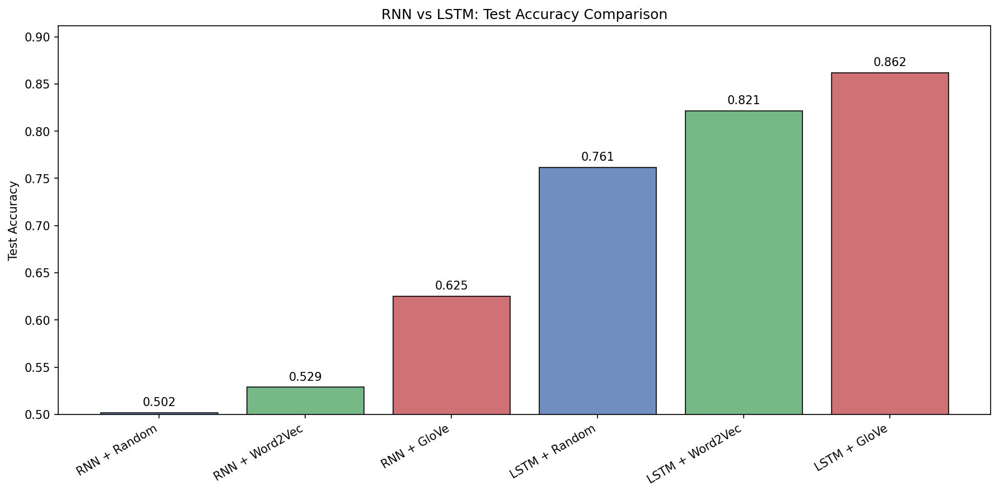
Test accuracy comparison across all six model-embedding combinations. LSTMs dramatically outperform vanilla RNNs regardless of embedding type.
🔧 Text Preprocessing
From raw HTML reviews to clean tokenized sequences
Dataset Split
- Training: 20,000 reviews
- Validation: 5,000 reviews
- Test: 25,000 reviews
Vocabulary
- Top 20,000 tokens +
<pad>, <unk>
- Max sequence length: 256
- NLTK WordNetLemmatizer
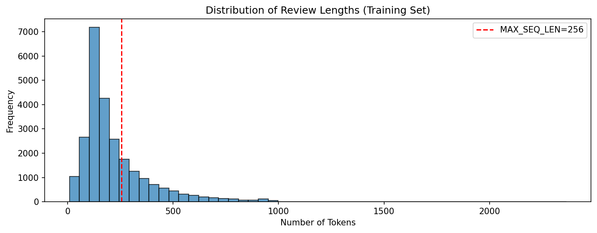
Distribution of review lengths after preprocessing. The red dashed line shows the chosen MAX_SEQ_LEN=256, which covers the majority of reviews while keeping computation manageable.
💎 Embedding Strategies
Three approaches to word representation — from random to pretrained
Random Init
Xavier uniform initialization. Embeddings learned entirely from scratch during training. 100-d vectors.
Word2Vec
Skip-gram trained on the IMDB corpus itself. Captures domain-specific semantics (window=5, 15 epochs). 100-d vectors.
GloVe 6B
Pretrained on 6 billion tokens from web corpora. Rich semantic relationships with broad vocabulary coverage. 100-d vectors.
🔄 Vanilla RNN
Baseline recurrent model — simple but limited by vanishing gradients
Architecture
- 2-layer RNN, hidden dimension 128
- Dropout: 0.3 (between layers and before FC)
- Output: Linear(128→1) + BCEWithLogitsLoss
- Gradient clipping: max_norm=5.0
- Adam (lr=1e-3), ReduceLROnPlateau, 10 epochs
| Embedding | Test Loss | Test Accuracy |
|---|
| RNNRandom | 0.6938 | 50.20% |
| RNNWord2Vec | 0.6913 | 52.87% |
| RNNGloVe | 0.6618 | 62.51% |
Vanishing Gradient Problem: With sequence length 256, gradients are multiplied through 256 recurrence steps. When the spectral radius of the Jacobian is <1, gradients vanish exponentially — the RNN struggles to connect early sentiment cues to the final classification.
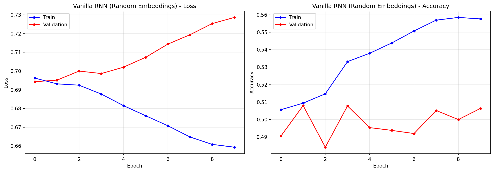
RNN + Random embeddings
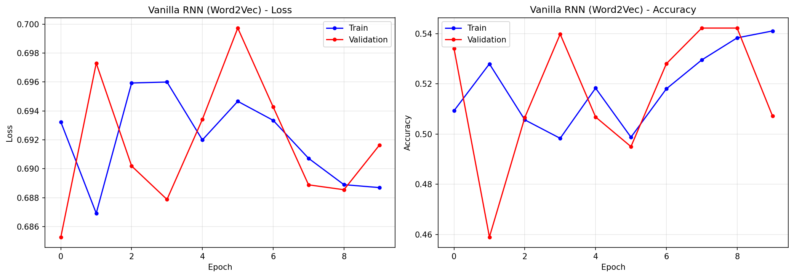
RNN + Word2Vec
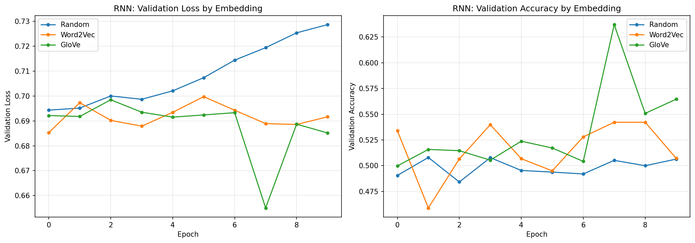
Validation loss and accuracy comparison across embedding types. Word2Vec and GloVe provide faster initial improvement, but all variants plateau near random chance.
🧠 LSTM
Gated architecture that solves the vanishing gradient problem
Why LSTM?
The LSTM introduces three gates (forget, input, output) and a cell state that acts as a gradient highway. This allows the model to selectively retain and forget information across long sequences — critical for understanding sentiment in reviews that can span hundreds of words.
| Embedding | Test Loss | Test Accuracy |
|---|
| LSTMRandom | 0.5532 | 76.14% |
| LSTMWord2Vec | 0.3972 | 82.13% |
| LSTMGloVe | 0.3551 | 86.16% |
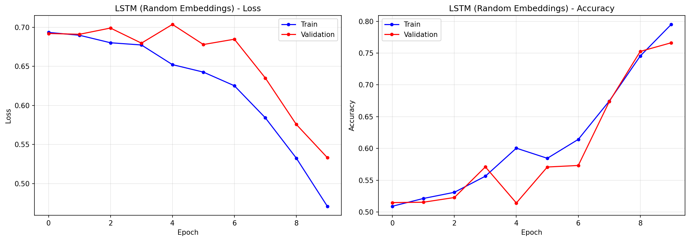
LSTM + Random
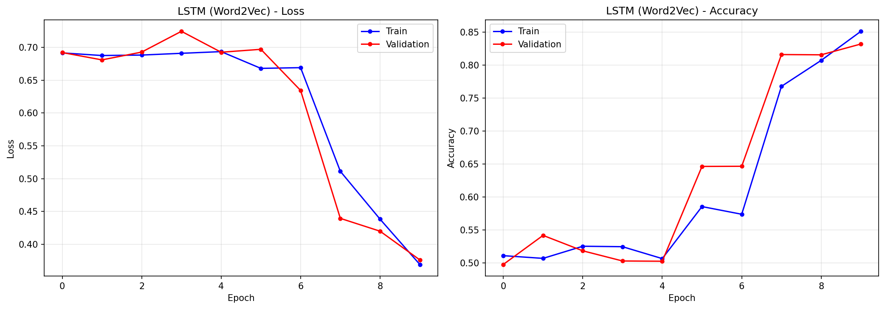
LSTM + Word2Vec training dynamics
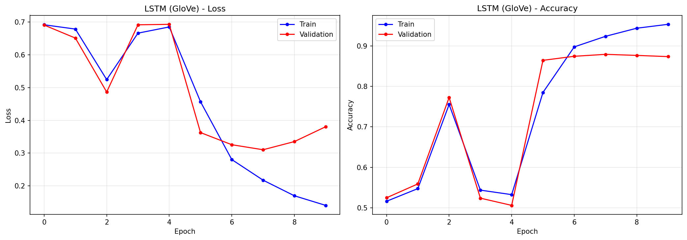
LSTM + GloVe training dynamics
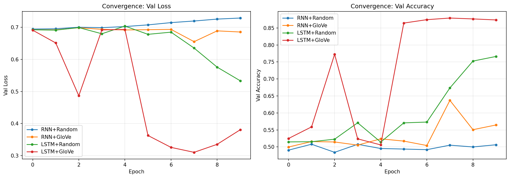
Convergence comparison: LSTM+GloVe achieves ~86% validation accuracy while vanilla RNN variants stagnate near 50%. The cell state highway enables dramatically faster and more effective learning.
🎯 Attention Mechanism
Learning to focus on sentiment-bearing words regardless of position
How It Works
Instead of relying on the last hidden state (information bottleneck), attention computes a weighted sum over all hidden states. A single linear projection scores each timestep, padding tokens are masked, and the context vector replaces the last hidden state for classification.
Parameter overhead: Only 129 additional parameters (h+1 for h=128) — negligible.
| Architecture | Test Loss | Test Accuracy |
|---|
| RNNGloVe (baseline) | 0.6331 | 62.51% |
| LSTMGloVe | 0.3831 | 86.16% |
| ATTNRNN + GloVe | 0.3113 | 87.77% |
| ATTNLSTM + GloVe | 0.3145 | 87.36% |
Key Result: Attention RNN + GloVe achieves 87.77% test accuracy — surpassing even the LSTM without attention (86.6%). Attention compensates for the RNN's vanishing gradient limitation by providing direct access to all timesteps.
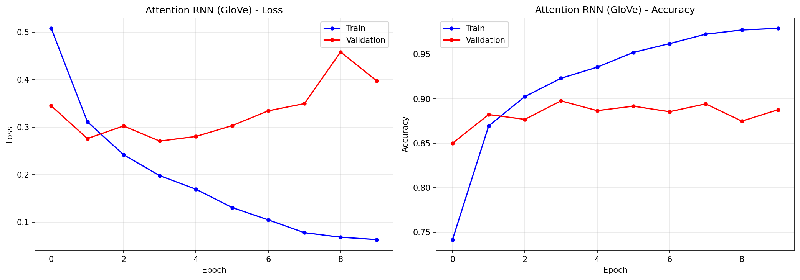
Attention RNN + GloVe
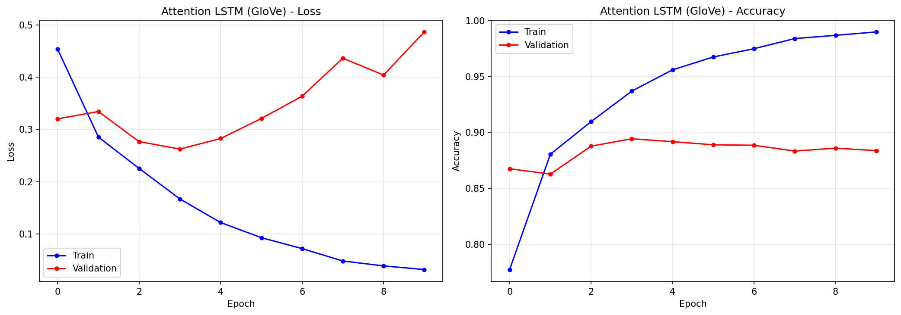
Attention LSTM + GloVe
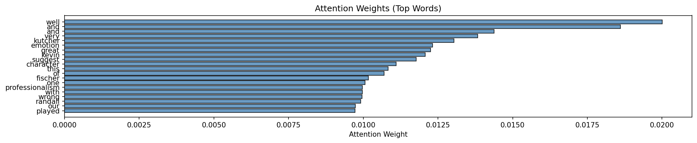
Top attention weights for a sample review. The model focuses on sentiment-bearing words like "well", "great", and "emotion" — providing interpretability into the classification decision.
⚡ Architecture Comparison
All architectures with GloVe embeddings — the full picture
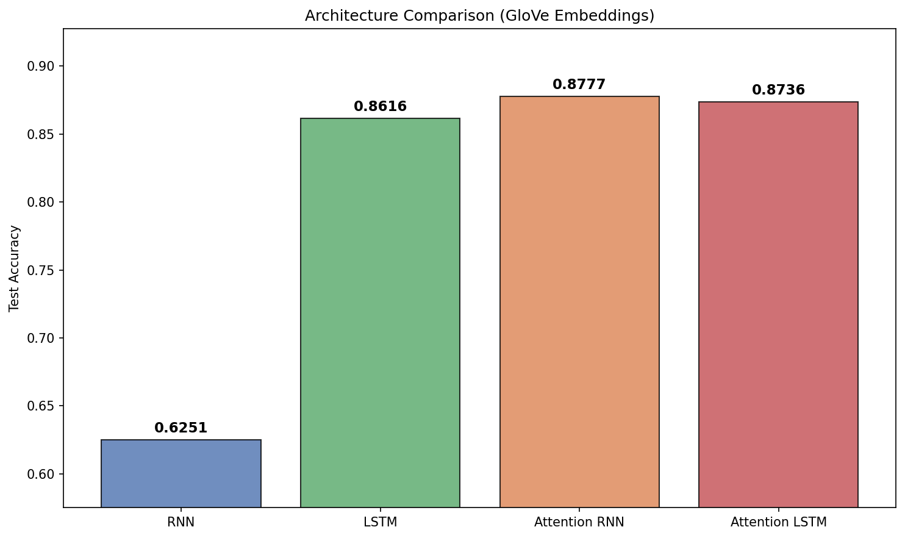
Validation loss and accuracy across all four architectures with GloVe embeddings
Final test accuracy comparison — attention models achieve ~88% while vanilla RNN stagnates at ~52%
✅ Key Findings
- Embeddings matter: GloVe provides the best initialization — trained on 6B tokens, captures rich semantic relationships
- LSTM >> RNN: LSTM outperforms vanilla RNN by 20-34% across all embeddings due to gated gradient flow
- Attention is powerful: Simple additive attention (129 extra params) boosts RNN from 62.51% to 87.77%
- Attention RNN ≈ LSTM: With attention, even a vanilla RNN matches or exceeds LSTM performance
- Vanishing gradients are real: Vanilla RNNs are near-random on sequences of length 256 — a clear practical demonstration
Sample Model Output
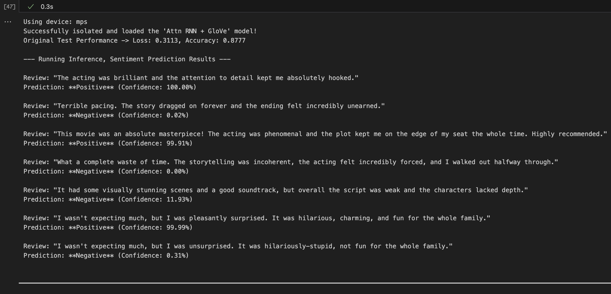
Pay attention to the last two samples, Not bad, eh?